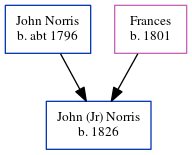

John (Jr) Norris 1826 -
[ Home ] | [ Calendar ] | [ Surnames Index ] | [ Census Index ] | [ Family History ]The child of John Norris and Frances, John Norris was born in 1826.
Parents
- John was born c. 1796
- Frances was born in 1801
Family Tree
Generated by ged2site. Last updated on Jun 6, 2024